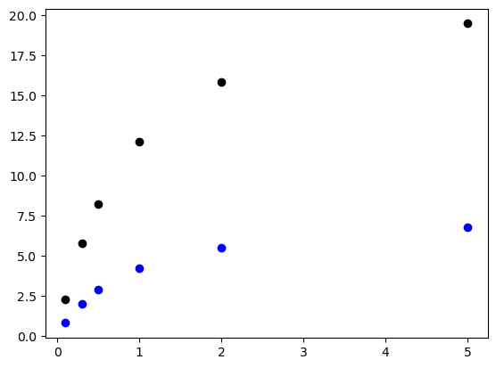
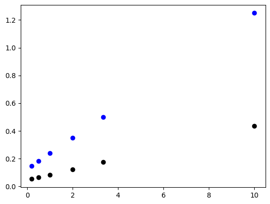
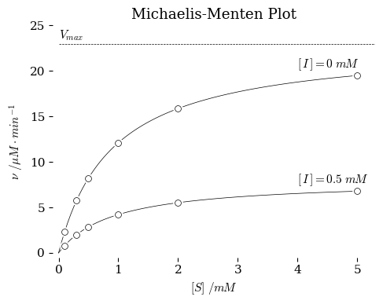
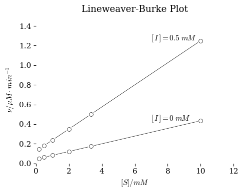

Intro to Michaelis-Menten Kinetics#
In this workbook we will introduce simple Python commands for exploring enzyme kinetics.
First consider the definitions of the Michaelis-Menten system. Enzyme kinetics are not simple first-order kinetics because of the saturadtion of the catalyst that is observed. The MM equation is the rate law for the following scheme.
\[ E + S \overset{K_M}{\leftrightharpoons} ES \xrightarrow [] {k_{cat}} E + P\]
The rate law is derived to be
\[ \nu = [E]_t\cdot k_{cat} \frac{[S]}{K_M + [S]} \]
Michaelis and Menten had no way of measuring \([E]_t\) and so they used a constant amount of enzyme solution and stated that
\[V_{max} = [E]_t\cdot k_{cat}\]
So the famous Michaelis-menten equation is
\[ \nu = V_{max} \frac{[S]}{K_M + [S]} \]
The terms \(V_{max}\) and \(K_M\) can be affected by the presence of inhibitors. The code below will plot enzyme kinetics with and without an inhibitor. Examine the code and confirm my math.
Show code cell source
import numpy as np
from matplotlib import pyplot as plt
############
## Create Michaelis-Menten results from knowm Vmax and KM
############
#### Define some parameters that you can change
KM = 0.9 # mM
Vmax = 23 # uM/min
KM_with_inhibitor = 0.9 # mM
Vmax_with_inhibitor = 8 # uM/min
#### Make a list of substrate concentrations
S = np.array([0.1, 0.3, 0.5, 1.0, 2.0, 5.0]) # make a numpy array from a list of numbers. An array of numbers can be used in math calculations. A list cannot.
#### Calculate Rates using values for inhibited and uninhibiter systems
v = Vmax * S / (KM + S)
v_inh = Vmax_with_inhibitor * S / (KM_with_inhibitor + S)
Show code cell source
###############
## Plot the Data in MM plot
##############
x = S
y = v
plt.plot(x,y,"ko")
x = S
y = v_inh
plt.plot(x,y,"bo")
plt.show()

Show code cell source
###############
## Plot the Data in Lineweaver-Burke plot
##############
x = 1 / S
y = 1 / v
plt.plot(x,y,"ko")
x = 1 / S
y = 1 / v_inh
plt.plot(x,y,"bo")
plt.show()

nks.
Show code cell source
############
## The rest of this code makes the plots fancier. Just steal it and use it
############
## fancy plot style sheet
github_location_styles = "https://raw.githubusercontent.com/blinkletter/LFER-QSAR/main/styles/"
plt.style.use(github_location_styles + "tufte.mplstyle")
## Smoother data sets for lines
S_smooth_list = np.linspace(0, np.max(S), 100) # Make a smooth set of substrate values for plotting the curve smoothly.
v_smooth = Vmax * S_smooth_list / (KM + S_smooth_list) # Claulate the rates using this high-resolution list for smooth curves.
v_inh_smooth = Vmax_with_inhibitor * S_smooth_list / (KM_with_inhibitor + S_smooth_list)
## Create plot with settings
fig, ax = plt.subplots(nrows=1, ncols=1, figsize=(5,4))
ax.margins(x=.07, y=.07, tight=True)
ax.set(
title="Michaelis-Menten Plot",
ylabel=r"$\nu \ /\mu M \cdot min^{-1}$",
xlabel=r"$[S] \ /m\!M$",
xlim=[-0.1,5.3],
ylim=[-0.5,25]
)
############
x = S
y = v
ax.scatter(x,y, s=64, color="white", marker='o', zorder=3)
ax.scatter(x,y, s=32, color="white", edgecolor="black", marker='o', linewidths = 0.5, zorder=3)
x = S_smooth_list
y = v_smooth
ax.plot(x,y,"k-", linewidth = 0.5)
plt.text(np.max(x)-1,np.max(y)+0.4 + 0.5,"$[\,I\,]=0\ m\!M$")
############
x = S
y = v_inh
ax.scatter(x,y, s=64, color="white", marker='o', zorder=3)
ax.scatter(x,y, s=32, color="white", edgecolor="black", marker='o', linewidths = 0.5, zorder=3)
x = S_smooth_list
y = v_inh_smooth
ax.plot(x,y,"k-", linewidth = 0.5)
plt.text(np.max(x)-1,np.max(y)+0.4 + 0.5,"$[\,I\,]=0.5\ m\!M$")
ax.hlines(Vmax,0,6, linestyle="--", linewidths = 0.5)
plt.text(0,Vmax + 0.5,"$V_{max}$")
plt.show()

Show code cell source
############
## The rest of this code makes the plots fancier. Just steal it and use it
############
## fancy plot style sheet
github_location_styles = "https://raw.githubusercontent.com/blinkletter/LFER-QSAR/main/styles/"
plt.style.use(github_location_styles + "tufte.mplstyle")
## Smoother data sets for lines
S_smooth_list = np.linspace(np.min(S), np.max(S), 100) # Make a smooth set of substrate values for plotting the curve smoothly.
v_smooth = Vmax * S_smooth_list / (KM + S_smooth_list) # Claulate the rates using this high-resolution list for smooth curves.
v_inh_smooth = Vmax_with_inhibitor * S_smooth_list / (KM_with_inhibitor + S_smooth_list)
## Create plot with settings
fig, ax = plt.subplots(nrows=1, ncols=1, figsize=(5,4))
ax.margins(x=.07, y=.07, tight=True)
ax.set(
title="Lineweaver-Burke Plot",
ylabel=r"$\nu /\mu M \cdot min^{-1}$",
xlabel=r"$[S] /mM$",
xlim=[0,12],
ylim=[0,1.5]
)
############
x = 1 / S
y = 1 / v
ax.scatter(x,y, s=64, color="white", marker='o', zorder=3)
ax.scatter(x,y, s=32, color="white", edgecolor="black", marker='o', linewidths = 0.5, zorder=3)
plt.text(np.max(x)-3,np.max(y),"$[\,I\,]=0\ m\!M$")
x = 1 / S_smooth_list
y = 1 / v_smooth
ax.plot(x,y,"k-", linewidth = 0.5)
############
x = 1 / S
y = 1 / v_inh
ax.scatter(x,y, s=64, color="white", marker='o', zorder=3)
ax.scatter(x,y, s=32, color="white", edgecolor="black", marker='o', linewidths = 0.5, zorder=3)
plt.text(np.max(x)-3,np.max(y),"$[\,I\,]=0.5\ m\!M$")
x = 1 / S_smooth_list
y = 1 / v_inh_smooth
ax.plot(x,y,"k-", linewidth = 0.5)
plt.show()
